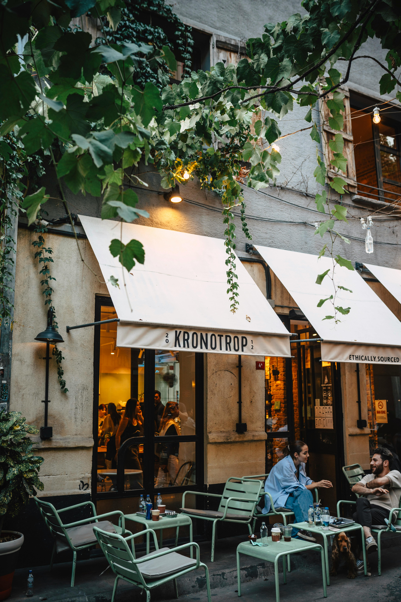
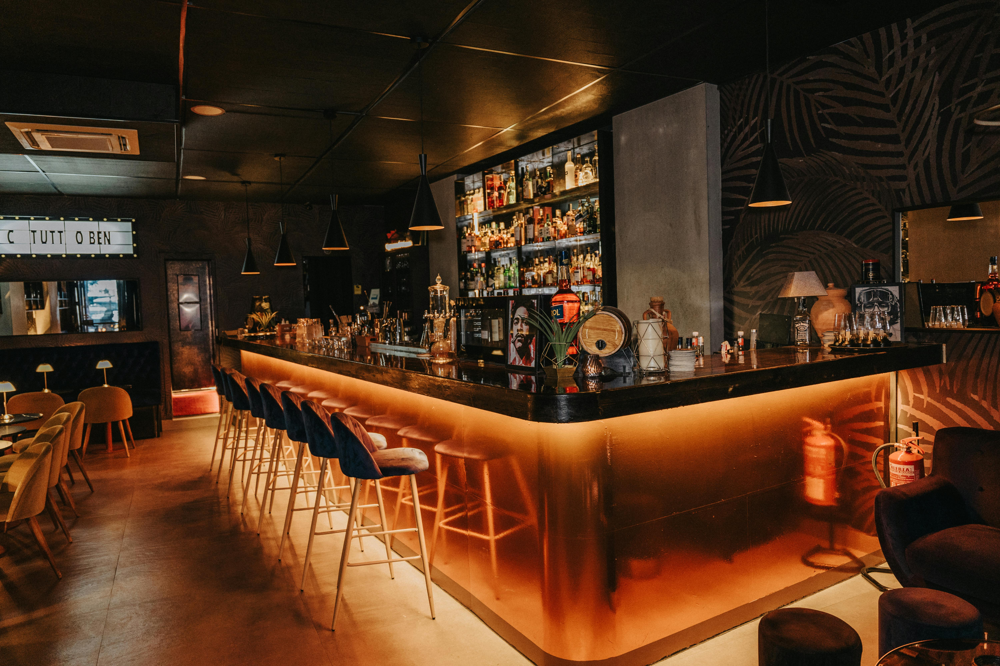
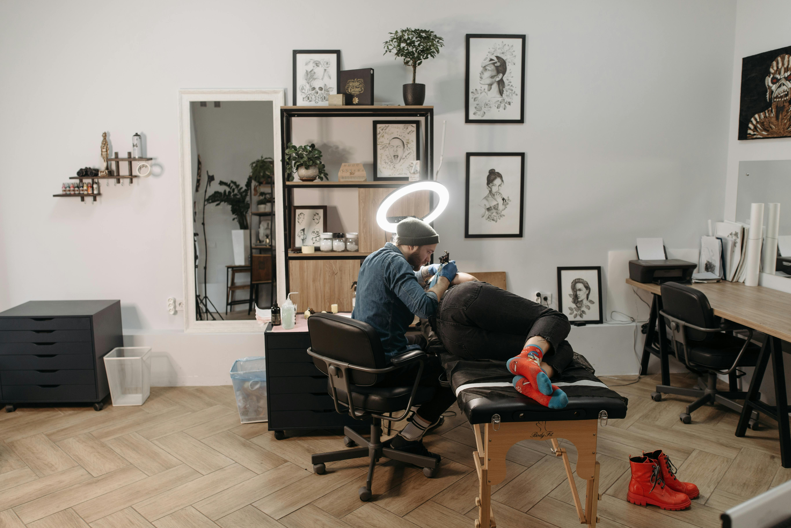

Et varmt sted for kaffe, små måltider og rolige øyeblikk. En café-opplevelse bygget rundt lys, stemning og ekte nærvær.
Se menyKronotop Café er et konsept for en lokal café som ønsker å fremstå varm, moderne og tydelig på nett. Siden viser stemning, meny, åpningstider og kontakt på en enkel måte — slik at gjesten raskt forstår hvorfor de bør komme innom.
Mandag–fredag: 09–17
Lørdag: 10–16
Søndag: Stengt
Havnegata 12
Demo by, Norge
For bord, arrangement eller private kvelder:
send oss en melding.


Dette er en demo laget av RNS Studio for å vise hvordan en café-nettside kan se ut.
Kontakt RNS